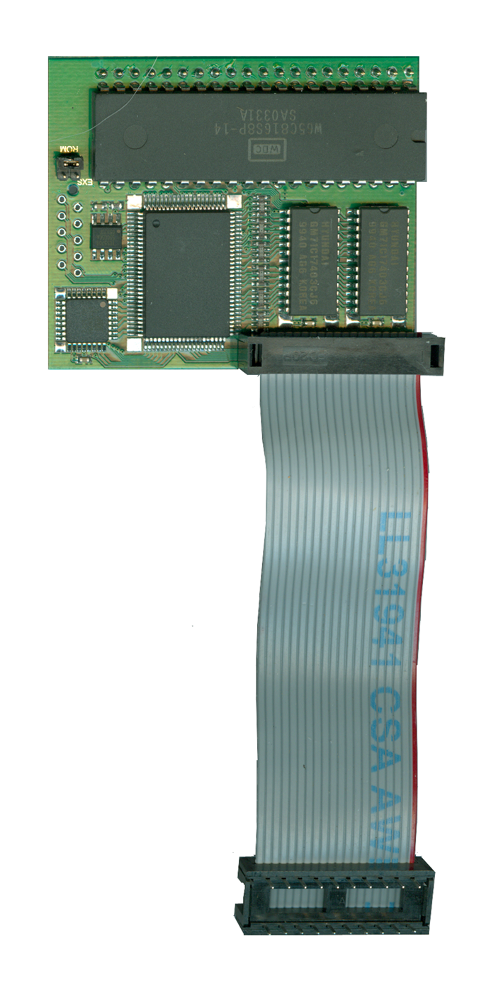

|


|

Antonia 65816/4MB board
- Front
| The Antonia is an all in one
65816 and 4MB linear RAM upgrade module. While it
would be difficult to install the Antonia into an Atari
400/800, it is possible with some modifications to the RF
Chassis on each system to accommodate the height of the
board as it would extend away from the CPU board on each
system far more than space would allow. The CPU
replacement is more geared towards installations into Atari
XL/XE computer systems. The other very nice
feature of the CPU upgrade is that it also has 4MB of linear
accessible RAM on the board. The 65816 can address up
to 16mb of memory in total.
For More information on this
upgrade board, please visit:
CLICK HERE
|
Content to
be added, updated 3/25/2019 |